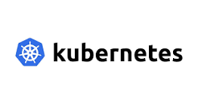
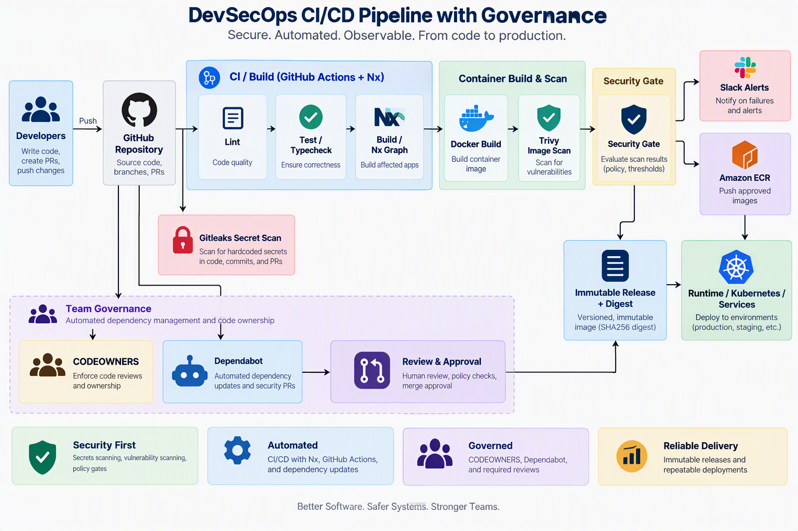
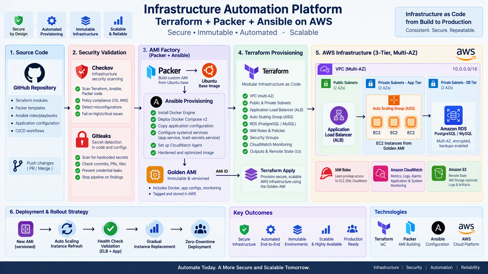

About Me
I am a Cloud Infrastructure and DevSecOps Engineer with expertise in AWS, Kubernetes, Docker, Terraform, GitHub Actions, Linux, and Windows Server administration. Experienced in designing, automating, securing, and maintaining scalable cloud environments using Infrastructure as Code (IaC), CI/CD pipelines, and security best practices. Skilled in system design, infrastructure automation, RBAC implementation, monitoring, troubleshooting, and cloud security.

Projects
Production EKS / GitOps Platform

Designed and implemented a production-grade AWS EKS platform for containerized microservices, leveraging GitOps principles with Argo CD, Helm, and ApplicationSets to automate deployments across Development,Staging, and Production environments. Established strong security, governance, and operational best practices to ensure scalability, reliability, and compliance.
- GitHub Actions CI/CD Automation
- GitHub OIDC for Secure Authentication
- Checkov Policy-as-Code Governance
- Terraform Remote State Bootstrapping
- AWS KMS State Encryption
- Production-Safe EKS Upgrade Strategy
View on GitHub→[Ecr&ArgoCD]
View on GitHub→[fintech-enterprise-gitops-manifest]
End-to-End CI/CD Platform for Fintech: Automated Testing, Security, and Release Delivery

End-to-end DevOps pipeline for a fintech microservices platform, built to automate testing, security scanning, containerization, and release delivery across a multi-service monorepo. Implemented with GitHub Actions, Nx, Docker, Amazon ECR, Trivy, and Gitleaks to support secure, repeatable, and production-ready deployments. The platform also includes team-based governance, CODEOWNERS ownership routing, dependency review automation, and real-time Slack notifications for security findings, releases, and incident alerts.
- Monorepo CI/CD with Nx & GitHub Actions
- Dockerized service builds and ECR publishing
- Security scanning with Trivy, Gitleaks, and policy gates
- Immutable release tagging and digest verification
- Organization-wide governance with CODEOWNERS and team ownership
- Slack alerts for security, release, and incident workflows
- Automated dependency management with review-based controls
Infrastructure Automation: Terraform + Packer + Ansible for AWS)

Complete infrastructure-as-code platform that automates provisioning and deployment of a secure, scalable 3-tier AWS environment. Terraform defines the cloud foundation (VPC, ALB, ASG, RDS, IAM), Packer builds immutable custom AMIs, and Ansible configures the application runtime (Docker, Docker Compose, systemd services, CloudWatch monitoring). Includes Checkov security scanning, Gitleaks secret detection, and safe AMI rollout strategies ensuring zero-downtime deployments with health-based instance cutover.
- Terraform modular setup (networking, compute, storage, IAM, monitoring)
- Packer AMI building with Ansible provisioning
- Docker/Docker Compose v2 baked into images
- Systemd service management & CloudWatch integration
- Security scanning (Checkov) & secrets detection (Gitleaks)
- Auto Scaling & Application Load Balancing
- Health-based safe rollout strategy
- RDS PostgreSQL/MySQL with IAM role access
View on GitHub→[infra_packer}